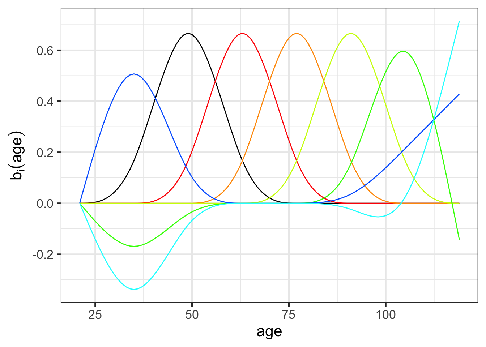
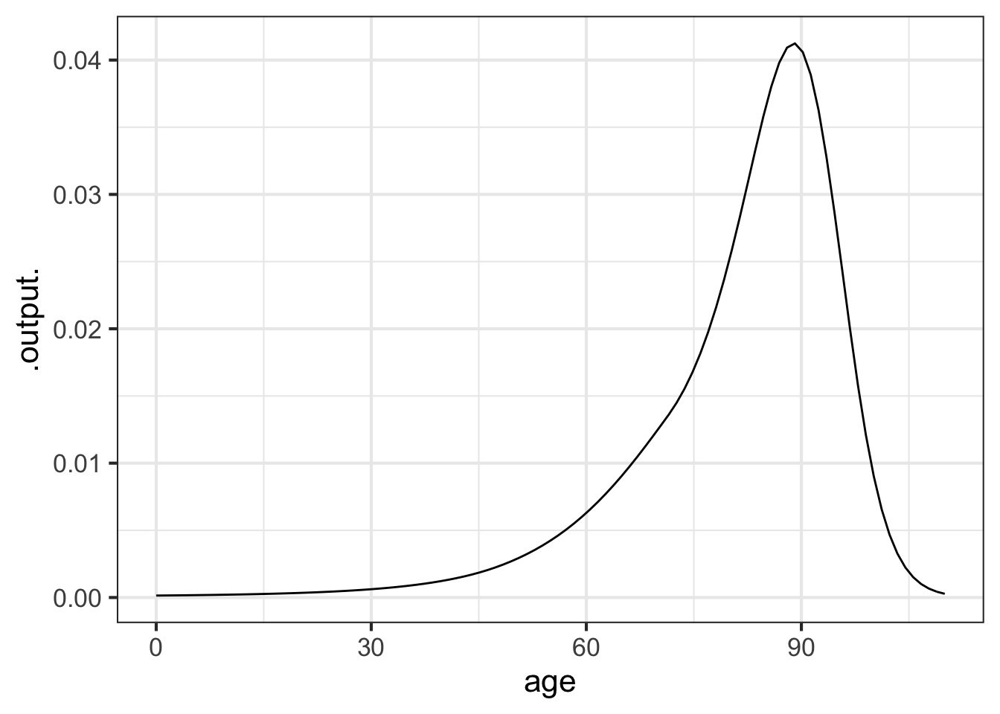

Chapter 38 Expectation
In this project, we’re going to study some statistics of life and death. Specifically, we’re going to look at “period life tables” assembled and published by the US Social Security Administration.
The M2014F data frame is basic data from 2014 on age-specific mortality, that is, the risk of a person of any given age having died in 2014. The table below is for females; there is a similar table for males on the Social Security website.
Scroll through the data until you are comfortable with the format. The variables year and age are self explanatory. pmort is the probability of a person of the given age having died in the next year. nliving and died are not counts from the population but a construction of a theoretical cohort of 100,000 newborn people whose lives are such as to follow, at any age, the mortality at that age. Thus, given the age-specific mortality in 2014, of the theoretical 100,000 newborns, 99,342 would still be alive at the end of age 10. died is the number from the theoretical cohort who would have died during the given the value number who are still alive at any age. While not exact basically nliving - died within an age will output nliving for the following age.
Essay: For the follwing essay question ensure that your answer is in the form of complete sentences and utilizes proper grammar.Explain why in the first row nliving + ndead does not add up to 100,000. Additionally, explain why nliving in row 4 is equal to 99,412 (In other words, how was the number calculated).
Question X According to the table, which age is the safest, that is, has the least risk of dying? Hint: it may be easiest to use the headings to sort
6︎✘ 11\(\heartsuit\ \) 28︎✘ 34︎✘
The sandbox below makes a plot of the mortality rate as a function of age. By default, the plot is being made with semi-log axes, but you can change the code to make the plot on linear axes or on log-log axes.
gf_point(pmort ~ age, data = M2014F) %>%
gf_refine(scale_y_log10()) The pattern of mortality vs age has a complex shape that becomes simpler if we split the domain into a handful of epochs. Use the various kinds of axes scaling to answer each of these questions.
Question Y For children age 1 to about 10 years, which of these function forms best matches the data? Hint: you can scale the x-axis using the gf_refine function by adding a similiar function as an argument.
- straight line︎✘
- exponential growth︎✘
- exponential decay︎✘
- power lawCorrect. Using log-log axes shows a straight line for children of these ages.
Question Z Is the mortality rate for babies in their first year in line with the pattern seen for other pre-adolescents?
- yes︎✘
- noGood. Young babies have a higher mortality than can be explained by the power-law function that fits the data for other young children.
Question A1 For adults age 25 to about 90 years, which of these function forms best matches the data (mortality v. age)?
straight line︎✘ exponential growth\(\heartsuit\ \) exponential decay︎✘ power law︎✘
We’re going to work with people who have an interest in eventual retirement, either saving for it or drawing from their savings. We could make a cubic spline function that fits the data, but the data are already very smooth and even a straight-line interpolant would be adequate. Instead, we will employ an easy to use method that models log mortality versus age using a small set of basis functions, shown in the following graph:
 Question B1 There are seven basis functions used for the model of mortality versus age. They fall into two groups: (1) the “purely local” hump functions and (2) the functions that have something to say at the beginning and end of the domain. Which of the following colors or groups of colors are a member of group (2)?
red︎✘ orange︎✘ black︎✘ blue\(\heartsuit\ \)
38.2 Life expectancy
You now have most of the apparatus to calculate one of the most commonly used indices of public health and yet one highly mis-understood by most decision makers: Life expectancy.
First, you need the model of the probability of dying at any exact given age. Then, calculate the **expectation value* of age according to this probability model.
We already have a probability of survival as a function of age: prob_living(). At first it might seem to you that the probability of dying at age \(y\) is 1 - prob_living(y) (in otherwords the opposite of probability of dying at any exact age in the opposite of probability of survival), but that’s not true. Why not? Because 1 - prob_living(y) is a probability of dying at age \(y\) or before. That is, it is the accumulated probability across all people.
We need to “de-accumulate” the probability, to get to the change in probability from one year to the next. Let’s replace the word “accumulation” with its calculus synonym: anti-derivative. We we need to “de-anti-derivative” the 1 - prob_living(y) function. That is, it’s the derivative of 1 - prob_living(y) that we want.
prob_dying <- D(1 - prob_living(y) ~ y)
slice_plot(prob_dying(age) ~ age, domain(age = c(0, 110)))
F <- antiD(age * prob_dying(age) ~ age)
F(110) - F(0)## [1] 81.04189Modify the scaffolding to compute the expectation value of age. Recall that an expectation value of a quantity \(y\) is \(\int y\, p(y) dy\) over the relevant domain.
Question tmp-2: According to our model prob_living(), what’s the expectation value of age (that is, “life expectancy” for females born in 2014)?
81 (+) []
83 []
87 []
89 []
Possibly you didn’t follow the (brief) argument about why to use the derivative of 1 - prob_living(y) instead of just 1 - prob_living(y) itself. So let’s try it out and see what we get:
F <- antiD(1-prob_living(y) ~ y)
F(110) - F(0)## [1] 28.88559Does that seem reasonable based upon your experience?
38.3 Misunderstanding life expectancy
What’s there to mis-understand about life expectancy? I’m not referring to the calculation itself, which puts together some challenging concepts like differentiation, integration, and function fitting.
The fundamental mistake is to use the short form of the name, “life expectancy” rather than the full name, "life expectancy at age ___." The number you hear about is “life expectancy at birth.”
People use life expectancy at birth to make decisions about things for which it is misleading. For instance, in public debates about health care, you will often hear that other rich nations have longer life expectancy than the US even though they spend half as much money per capita on health care. But the low US life expectancy is shaped largely by some features not so relevant to health care: the relatively high infant mortality in the US (which has it’s own set of factors), the high teenager mortality (which is not as clear when only looking at the data for females), gun deaths, etc.
Since the large majority of health-care spending is for seniors, we should look at the outcome for seniors. For instance, we might want to look at life expectancy at age 67. Let’s calculate that. Note that the calculation is the same as the above, but prob_living(y) has been adjusted so that it applies to people who reach age 67.
prob_dying <- D(1-prob_living(y)/prob_living(67) ~ y)
F <- antiD(age*prob_dying(age) ~ age)
F(110) - F(67)## [1] 85.83452Essay: For the follwing essay question ensure that your answer is in the form of complete sentences and utilizes proper grammar. The immediately above calculation found life expectancy to be 85.8346. This number is larger than the life expectancy that was calculated in the previous section (81.04189). Why is that? Be sure to explain what both numbers are in your response.